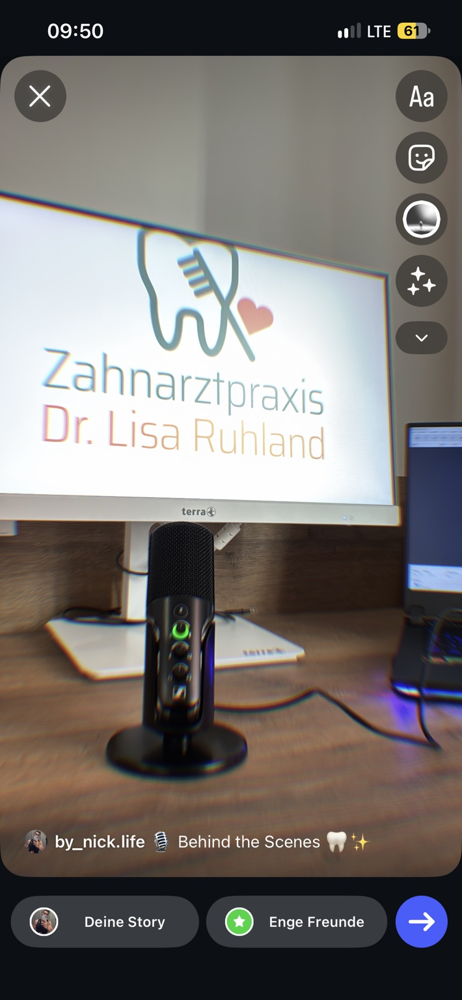
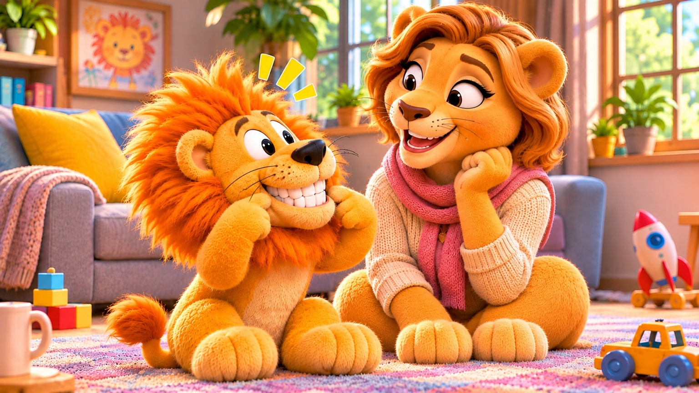
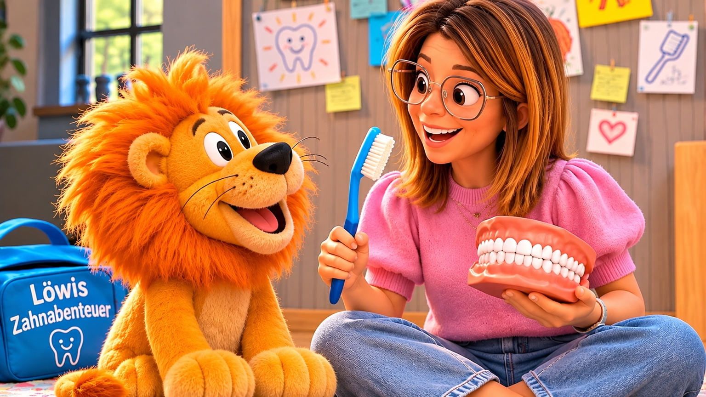

IN PRODUKTION
Löwis Zahnabenteuer · 3D-Animation
Löwi und seine Mama Lotti entdecken gemeinsam, wie spannend Zahngesundheit sein kann. Eine kindgerechte Animationsgeschichte voller Neugier und Humor.
CASE STUDY · DIGITALE PATIENTENKOMMUNIKATION
Von der ersten Idee zur lebendigen Plattform: Webentwicklung, verständliches Zahnwissen, Podcastproduktion und neue audiovisuelle Formate für Familien.
PODCAST
Drei Podcastfolgen sind bereits fertiggestellt. Das Format ergänzt die digitale Patientenkommunikation um verständliche Inhalte zum Anhören.
Dr. Lisa Ruhland stellt sich vor und erzählt, warum ihr verständliche Zahnmedizin und Vertrauen besonders am Herzen liegen.
Ein Gespräch über Unsicherheit und Ängste rund um den Zahnarztbesuch.
Die dritte Folge ist über die Anwendung erreichbar; eine lokale Audiodatei liegt noch nicht vor.

LÖWIS ZAHNABENTEUER
Mit Löwi entsteht eine kindgerechte Erlebniswelt, die Zahnwissen spielerisch vermittelt. Zwei audiovisuelle Formate befinden sich aktuell in Produktion.
Löwi und seine Mama Lotti entdecken gemeinsam, wie spannend Zahngesundheit sein kann. Eine kindgerechte Animationsgeschichte voller Neugier und Humor.

Gemeinsam mit Zahnärztin Lisa lernt Löwi den Behandlungsstuhl kennen. Medizinische Themen werden spielerisch, freundlich und verständlich erklärt.


Kurzer Videoausschnitt aus dem aktuellen Entwicklungsstand.

Animiertes Schaubild zur Wurzelkanalbehandlung – verständlich und anschaulich erklärt. Das Thema findest du auch in der ZAHNgefühl-Anwendung.
Konzept- und Produktionsstand: November 2026. Fertige Videos werden ergänzt, sobald sie vorliegen.
ZAHNGEFÜHL verbindet eine digitale Anwendung mit unterschiedlichen Medienformaten. Mein Beitrag umfasst die Konzeption, UI/UX-Gestaltung, technische Umsetzung und die Weiterentwicklung der Inhalte.

Ein Online-Anamnesebogen erleichtert die Vorbereitung auf den Praxisbesuch.

Von der Idee über die Benutzeroberfläche bis zur technischen Umsetzung und Medienproduktion.
Die Plattform wird laufend um neue Inhalte ergänzt.
ZAHNGEFÜHL entdecken ↗